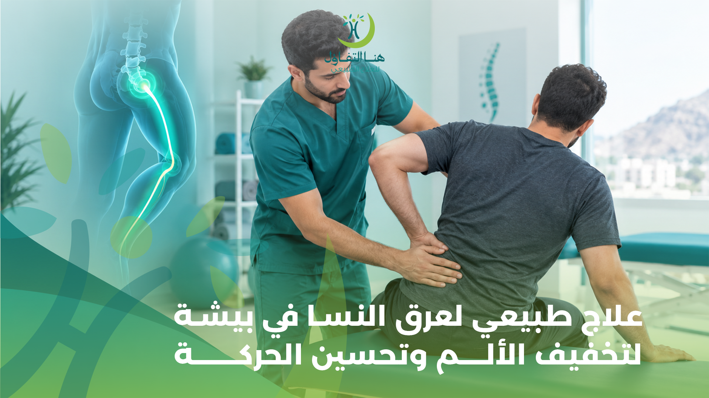

يُعد عرق النسا من المشكلات التي قد تؤثر في القدرة على الحركة وممارسة الأنشطة اليومية، إذ يمكن أن يسبب ألمًا يمتد من أسفل الظهر إلى الأرداف وخلف الفخذ والساق، وقد يصاحبه تنميل أو وخز أو ضعف عضلي في بعض الحالات. وقد يجد المصاب صعوبة في الجلوس لفترات طويلة، أو الوقوف والمشي، أو النوم بصورة مريحة، مما يؤثر في جودة الحياة والقدرة على أداء المهام اليومية والعمل.
ويبحث كثير من الأشخاص عن علاج طبيعي لعرق النسا في بيشة بهدف تخفيف الألم وتحسين الحركة واستعادة القدرة على ممارسة الأنشطة المعتادة. ويُعد العلاج الطبيعي والتأهيل الحركي من الخيارات غير الجراحية التي قد تساعد في التعامل مع أعراض عرق النسا، وفقًا لسبب المشكلة وشدة الأعراض ونتائج التقييم الطبي والحركي.
في مركز هنا التفاؤل للعلاج الطبيعي والتأهيل الطبي في بيشة، يمكن للمصابين الاستفسار عن خدمات العلاج الطبيعي والتأهيل المناسبة لحالتهم، مع أهمية تحديد طبيعة الألم أولًا والتأكد من عدم وجود علامات تستدعي تدخلًا طبيًا عاجلًا. فالخطة العلاجية المناسبة لا تعتمد على تخفيف الألم فقط، بل تهدف أيضًا إلى تحسين الحركة والقدرة الوظيفية ومساعدة المريض على العودة التدريجية إلى أنشطته اليومية.
ما هو عرق النسا؟
عرق النسا هو مصطلح يُستخدم لوصف الألم الناتج عن تهيج أو ضغط على العصب الوركي أو جذور الأعصاب التي تكوّنه في أسفل العمود الفقري. ويمتد العصب الوركي من منطقة أسفل الظهر عبر الأرداف إلى الساق، ولذلك قد تظهر الأعراض على مسار العصب بدلًا من اقتصارها على الظهر وحده.
ويختلف عرق النسا عن آلام الظهر العادية؛ فقد يشعر المصاب بألم في جهة واحدة من الجسم يمتد إلى الساق، أو بإحساس يشبه الحرقان أو الصدمات الكهربائية، وقد يصاحبه وخز أو تنميل في القدم أو أصابعها.
ولا تعني كل حالة من آلام الظهر الممتدة إلى الساق وجود عرق النسا بالضرورة؛ إذ توجد أسباب أخرى قد تتشابه في أعراضها. لذلك يساعد التقييم الطبي والفحص الحركي والعصبي على تحديد طبيعة المشكلة واختيار أسلوب التعامل المناسب معها.
ما أسباب عرق النسا؟
تتعدد أسباب تهيج العصب الوركي أو الضغط على جذور الأعصاب، ويعتمد العلاج على تحديد السبب المحتمل ومدى تأثيره في الحركة والإحساس والقوة العضلية.
1. الانزلاق الغضروفي في أسفل الظهر
يُعد الانزلاق الغضروفي من الأسباب الشائعة لعرق النسا. فقد يؤدي بروز جزء من الغضروف بين الفقرات إلى تهيج أحد جذور الأعصاب القريبة، مما يسبب ألمًا يمتد إلى الأرداف والساق. وقد تزداد الأعراض مع بعض الحركات أو عند السعال والعطس، لكن نمط الألم يختلف من شخص إلى آخر، ولا يمكن تحديد وجود الانزلاق الغضروفي اعتمادًا على الأعراض وحدها.
2. ضيق القناة الشوكية
قد يؤدي تضيق المساحة التي تمر عبرها الأعصاب داخل العمود الفقري إلى الضغط على جذور الأعصاب، خاصة لدى بعض كبار السن. وقد تظهر الأعراض في صورة ألم أو تنميل أو ثقل في الساقين، وقد تتأثر القدرة على المشي والوقوف لفترات طويلة. وتحتاج هذه الحالات إلى تقييم دقيق لتحديد مدى ارتباط الأعراض بالضغط العصبي وطبيعة التدخل المناسب.
3. التغيرات المرتبطة بالعمر
قد تحدث تغيرات تدريجية في الفقرات والمفاصل والأقراص الغضروفية مع التقدم في العمر، وقد تسهم بعض هذه التغيرات في تهيج الأعصاب أو تضيق المساحات المحيطة بها. ومع ذلك، فإن وجود تغيرات في صور الأشعة لا يعني بالضرورة أنها السبب المباشر للألم؛ إذ يجب ربط نتائج الفحوصات بالأعراض والفحص السريري.
4. إصابات أسفل الظهر
قد ترتبط بعض حالات عرق النسا بإصابة في الظهر أو حركة مفاجئة أو حادث أدى إلى تهيج الأنسجة أو الأعصاب. وفي هذه الحالات، يجب مراعاة طبيعة الإصابة وشدتها قبل البدء في أي برنامج للتمارين أو التأهيل.
5. أسباب أخرى لألم الأرداف والساق
قد تتشابه بعض مشكلات العضلات والمفاصل أو الأعصاب الأخرى مع أعراض عرق النسا. لذلك لا يُنصح بافتراض أن كل ألم في الساق ناتج عن العصب الوركي، خصوصًا إذا كان الألم مصحوبًا بضعف ملحوظ أو اضطراب في الإحساس أو أعراض غير معتادة.
أعراض عرق النسا التي تستدعي الاهتمام
تختلف أعراض عرق النسا باختلاف موضع تهيج العصب ودرجة تأثره، وقد تكون بسيطة لدى بعض الأشخاص، بينما تؤثر بصورة واضحة في الحركة لدى آخرين.
ومن الأعراض التي قد تظهر:
- ألم يبدأ من أسفل الظهر أو الأرداف ويمتد إلى إحدى الساقين.
- ألم حارق أو حاد يسير على طول الساق.
- الشعور بالوخز أو التنميل في الساق أو القدم.
- زيادة الألم مع بعض الحركات أو السعال والعطس.
- صعوبة الجلوس أو الوقوف لفترات طويلة.
- الشعور بثقل الساق أو صعوبة أداء بعض الحركات.
- ضعف عضلي في الساق أو القدم في بعض الحالات.
وقد يكون الألم في الساق أكثر وضوحًا من ألم أسفل الظهر، كما أن الأعراض قد تتغير مع الوقت. ولهذا فإن تقييم الحالة لا يعتمد على شدة الألم وحدها، بل يشمل أيضًا الإحساس والقوة العضلية والقدرة على المشي وأداء الأنشطة اليومية.
متى يجب التوجه إلى الطوارئ؟
إذا ظهرت أي من هذه العلامات، اطلب الرعاية الطبية الطارئة فورًا:
- فقدان جديد للتحكم في البول أو البراز.
- صعوبة جديدة في بدء التبول أو عدم القدرة عليه.
- خدر حول الأعضاء التناسلية أو منطقة ما بين الفخذين.
- ضعف شديد أو متزايد في الساقين.
تنبيه هام:
وقد تشير هذه الأعراض إلى ضغط خطير على الأعصاب يحتاج إلى تقييم عاجل. ولا ينبغي تأخير التقييم العاجل من أجل تجربة جلسات العلاج الطبيعي أو التمارين المنزلية.
علاج عرق النسا بالعلاج الطبيعي في بيشة
يهدف العلاج الطبيعي لعرق النسا إلى التعامل مع الأعراض وتحسين القدرة على الحركة والقيام بالأنشطة اليومية، وفقًا لسبب الحالة ونتائج التقييم. ولا توجد خطة واحدة تناسب جميع المصابين؛ فالتمرين الذي يناسب شخصًا قد لا يكون مناسبًا لشخص آخر، خاصة عند وجود ضغط عصبي واضح أو ضعف عضلي.
وقد يتضمن برنامج التأهيل عدة عناصر مترابطة، منها التقييم الحركي، والتمارين المناسبة، والتوجيه بشأن الأنشطة اليومية، والمتابعة المنتظمة للاستجابة للعلاج.
أولًا: تقييم الحالة قبل بدء العلاج
تبدأ الخطة المناسبة بفهم طبيعة الأعراض وتاريخ ظهورها ومدى تأثيرها في حياة المريض. وقد يشمل التقييم مراجعة موضع الألم واتجاه امتداده، والحركات التي تزيده أو تخففه، والقدرة على المشي والجلوس والوقوف.
كما قد يتضمن الفحص تقييم مدى حركة أسفل الظهر، وقوة عضلات الأطراف السفلية، والإحساس وردود الفعل العصبية بحسب الحاجة، إلى جانب مراجعة أي فحوصات سابقة إذا كانت متاحة.
يساعد هذا التقييم على تحديد ما إذا كانت الحالة مناسبة للتأهيل الطبيعي، أو تحتاج إلى مراجعة الطبيب أو إجراء تقييم إضافي قبل البدء.
ثانيًا: التمارين العلاجية المناسبة لعرق النسا
تُعد التمارين العلاجية جزءًا مهمًا من التعامل مع كثير من حالات ألم أسفل الظهر المصحوب بعرق النسا. ويُحدد اختصاصي العلاج الطبيعي نوع التمارين وشدتها ومدى تكرارها وفقًا لقدرة المريض واستجابته.
وقد تشمل الخطة، بحسب الحالة:
- تمارين لتحسين الحركة بصورة تدريجية.
- تمارين لتنشيط عضلات الجذع التي تساعد على دعم العمود الفقري.
- تمارين لتقوية العضلات التي تحتاج إلى تحسين القوة والتحمل.
- تمارين لتحسين القدرة على المشي والانتقال بين الجلوس والوقوف.
- تمارين حركة موجهة تُختار وفقًا لاستجابة الأعراض.
تنبيه:
ولا يعني ذلك أن كل مصاب يحتاج إلى جميع هذه التمارين، كما لا يُنصح بتطبيق برنامج موحد من الإنترنت دون تقييم. فإذا أدى تمرين إلى زيادة واضحة في الألم الممتد إلى الساق، أو ظهور تنميل جديد أو ضعف، فيجب إيقافه وطلب التقييم المناسب.
ثالثًا: العلاج اليدوي ضمن برنامج التأهيل
قد يستخدم اختصاصي العلاج الطبيعي بعض تقنيات العلاج اليدوي، مثل تحريك المفاصل أو التعامل مع الأنسجة الرخوة، عندما تكون مناسبة لحالة المريض.
ويُفضّل أن تكون هذه التقنيات جزءًا من برنامج متكامل يتضمن التمارين والتوجيه الحركي، لا أن تكون الوسيلة الوحيدة للعلاج. كما يجب اختيارها بعد التأكد من ملاءمتها للحالة وعدم وجود موانع تستدعي تجنبها.
رابعًا: تحسين القدرة على المشي والحركة
قد يتسبب ألم عرق النسا في تقليل الحركة والابتعاد عن الأنشطة المعتادة خوفًا من زيادة الألم. لكن الراحة الطويلة في السرير ليست الخيار الأفضل عادةً؛ إذ يُنصح بالحفاظ على الحركة اليومية ضمن الحدود التي تسمح بها الحالة.
وقد يركز التأهيل على زيادة القدرة على المشي تدريجيًا، وتحسين الانتقال من الجلوس إلى الوقوف، وممارسة الأنشطة اليومية بطريقة أكثر راحة وأمانًا.
ويجب تعديل مقدار النشاط وفقًا لشدة الأعراض. فالهدف ليس إجبار المريض على الحركة رغم الألم الشديد، بل مساعدته على العودة التدريجية إلى النشاط دون تحميل زائد أو تجاهل العلامات التحذيرية.
خامسًا: التثقيف الحركي وتعديل العادات اليومية
يساعد فهم العوامل التي تزيد الأعراض على إدارة الحالة بصورة أفضل.
وقد تشمل إرشادات التأهيل:
- • تغيير وضعية الجسم بانتظام بدلًا من البقاء في وضع واحد لفترات طويلة.
- • تنظيم فترات الجلوس والعمل بحيث تتخللها حركة مناسبة.
- • استخدام طريقة آمنة عند رفع الأشياء، وتجنب الرفع المفاجئ للأحمال الثقيلة أثناء تفاقم الأعراض.
- • العودة التدريجية إلى الأنشطة المعتادة وفقًا للاستجابة.
- • الالتزام بالتمارين المنزلية التي يحددها الاختصاصي.
- • متابعة التغيرات في الألم والقوة والإحساس أثناء فترة التأهيل.
ولا توجد وضعية مثالية واحدة تناسب جميع المصابين؛ لذلك ينبغي أن تكون الإرشادات عملية ومناسبة لطبيعة العمل والحركة اليومية لدى كل شخص.
هل يساعد العلاج الطبيعي في تخفيف ألم عرق النسا؟
قد يساعد العلاج الطبيعي في تحسين الحركة وتخفيف الأعراض لدى بعض المصابين، خصوصًا عندما تكون الخطة مناسبة لسبب المشكلة وقدرة المريض على ممارسة التمارين.
وتختلف الاستجابة للعلاج من حالة إلى أخرى؛ فقد تتحسن بعض الحالات تدريجيًا خلال أسابيع، بينما تحتاج حالات أخرى إلى فترة أطول أو تقييم طبي إضافي، خاصة إذا كان الألم شديدًا أو مستمرًا أو مصحوبًا بضعف عصبي.
كما أن بعض حالات عرق النسا تتحسن بمرور الوقت، ولذلك لا يمكن نسبة كل تحسن إلى إجراء علاجي واحد. ويكون الهدف من التأهيل مساعدة المريض على إدارة الأعراض، واستعادة النشاط تدريجيًا، وتقليل تأثير المشكلة في جودة الحياة.
وإذا لم تتحسن الأعراض، أو ازدادت سوءًا، أو استمرت في منع المريض من ممارسة أنشطته المعتادة، فينبغي مراجعة الطبيب لتقييم الحالة وتحديد الخطوة التالية.
تمارين عرق النسا: لماذا يجب اختيارها بعناية؟
يبحث كثير من المصابين عن تمارين عرق النسا لتخفيف الألم في المنزل، لكن التمارين لا تناسب الجميع بالدرجة نفسها. فاختيار التمرين يعتمد على مصدر الأعراض، ومدى تهيج العصب، وقدرة المريض على الحركة، ووجود أي علامات عصبية مصاحبة.
وقد يوصي اختصاصي العلاج الطبيعي بتمارين حركة أو تقوية أو نشاط هوائي خفيف بحسب التقييم. وفي المقابل، قد تكون بعض تمارين الشد القوي أو الحركات المتكررة غير مناسبة لبعض الحالات، خصوصًا إذا زادت الألم الممتد إلى الساق.
لذلك ينبغي مراعاة ما يلي:
- عدم بدء تمارين شديدة أو إجبار الجسم على الوصول إلى مدى حركة مؤلم.
- عدم الاستمرار في تمرين يسبب زيادة واضحة في الألم أو ظهور تنميل أو ضعف جديد.
- عدم الاعتماد على تمارين منزلية بدلًا من التقييم عند وجود أعراض مستمرة أو متفاقمة.
- طلب المشورة الطبية عند وجود مرض مزمن أو إصابة سابقة أو جراحة حديثة قد تؤثر في سلامة التمرين.
إن البرنامج المناسب هو الذي يُختار بناءً على تقييم الحالة، ثم يُعدّل بحسب الاستجابة الفعلية، وليس وفقًا لعدد ثابت من التمارين يناسب الجميع.
الفرق بين عرق النسا والانزلاق الغضروفي
يرتبط عرق النسا والانزلاق الغضروفي في كثير من الحالات، لكنهما ليسا المصطلح نفسه.
فالانزلاق الغضروفي هو مشكلة قد تحدث في أحد الأقراص الموجودة بين فقرات العمود الفقري، بينما يصف عرق النسا نمطًا من الأعراض المرتبطة بتهيج العصب الوركي أو جذور الأعصاب التي تكوّنه.
وقد يؤدي الانزلاق الغضروفي إلى عرق النسا إذا تسبب في تهيج أحد جذور الأعصاب، لكن ليس كل انزلاق غضروفي يسبب أعراضًا، كما أن عرق النسا قد يحدث لأسباب أخرى.
وتساعد معرفة هذا الفرق على فهم أهمية التقييم قبل اختيار العلاج؛ فالتعامل مع ألم الساق لا يعتمد على اسم الحالة وحده، بل على السبب ودرجة تأثر الأعصاب والقدرة الوظيفية.
هل يحتاج مريض عرق النسا إلى الأشعة؟
لا يحتاج كل مصاب بعرق النسا إلى إجراء أشعة بصورة روتينية. ويعتمد قرار التصوير على الأعراض والفحص السريري ووجود علامات تستدعي تقييمًا إضافيًا، وكذلك على ما إذا كانت نتيجة التصوير ستغيّر خطة العلاج.
قد يطلب الطبيب تصويرًا بالرنين المغناطيسي أو فحوصات أخرى في حالات محددة، مثل وجود أعراض عصبية مقلقة، أو استمرار الأعراض رغم العلاج المناسب، أو الاشتباه في سبب يحتاج إلى تدخل متخصص.
ولا ينبغي تأخير التقييم الطبي عند ظهور علامات الخطر انتظارًا لإجراء تصوير، كما لا يُنصح بإجراء الفحوصات لمجرد وجود ألم دون تحديد الحاجة إليها.
عرق النسا أثناء الجلوس والعمل
قد يلاحظ بعض المصابين زيادة الألم عند الجلوس لفترة طويلة، خصوصًا أثناء القيادة أو العمل المكتبي. وقد يؤدي البقاء في وضع واحد لفترات ممتدة إلى زيادة الانزعاج لدى بعض الأشخاص، لذلك يمكن أن تساعد الحركة المنتظمة وتعديل الأنشطة في تحسين القدرة على تحمل اليوم.
ومن الإرشادات التي قد تكون مفيدة:
- • تغيير وضعية الجلوس من وقت إلى آخر.
- • أخذ فترات حركة قصيرة ومنتظمة بحسب القدرة.
- • ضبط ارتفاع الكرسي ومكان الشاشة لتقليل الإجهاد أثناء العمل.
- • تجنب حمل الأوزان أو الانحناء المفاجئ عند وجود ألم حاد.
- • اختيار وضعية مريحة دون الاعتقاد بأن هناك وضعية واحدة يجب الالتزام بها طوال اليوم.
إذا كان الجلوس يسبب ألمًا شديدًا أو يمتد الألم إلى الساق بصورة متزايدة، فقد يحتاج المريض إلى تقييم فردي لتحديد الحركات والأنشطة التي تناسب حالته.
علاج عرق النسا لدى كبار السن
قد تتداخل عدة عوامل لدى كبار السن، مثل التغيرات المرتبطة بالعمر في العمود الفقري، وضعف العضلات، وقلة النشاط، ومشكلات التوازن. ولذلك يجب أن يراعي برنامج التأهيل الحالة الصحية العامة، والأدوية المستخدمة، والقدرة على المشي، واحتمال السقوط.
وقد يتضمن التأهيل، عند ملاءمته، تمارين لتحسين القوة والقدرة على الانتقال والحركة اليومية، إلى جانب إرشادات السلامة داخل المنزل.
تنبيه:
ويجب الانتباه إلى أن ظهور ضعف جديد في الساق أو تدهور سريع في القدرة على المشي لا ينبغي اعتباره جزءًا طبيعيًا من التقدم في العمر؛ بل يستدعي تقييمًا طبيًا مناسبًا.
متى يحتاج مريض عرق النسا إلى مراجعة الطبيب؟
تكون المراجعة الطبية مهمة عندما يكون الألم شديدًا أو مستمرًا أو يزداد تدريجيًا، أو عندما يؤثر بصورة واضحة في المشي والنوم والعمل والأنشطة اليومية.
كما تستدعي بعض الحالات تقييمًا طبيًا قبل بدء التأهيل، خاصةً عند وجود ضعف عضلي، أو تغير ملحوظ في الإحساس، أو تاريخ لإصابة مهمة، أو أعراض غير معتادة.
أما هذه الأعراض فتتطلب التوجه إلى الطوارئ فورًا:
- فقدان التحكم في البول أو البراز.
- صعوبة التبول الجديدة.
- الخدر حول منطقة الأعضاء التناسلية أو المقعدة.
- الضعف الشديد أو المتزايد في الساقين.
وقد يحتاج بعض المرضى إلى علاج دوائي يحدده الطبيب، أو تقييم لدى اختصاصي العمود الفقري، أو تدخلات أخرى إذا لم تكن التدابير غير الجراحية كافية. ولا يُعد العلاج الطبيعي بديلًا عن الرعاية الطبية العاجلة عند وجود علامات خطرة.
لماذا تختار هنا التفاؤل للعلاج الطبيعي والتأهيل الطبي في بيشة؟
عند البحث عن مركز علاج طبيعي في بيشة، من المهم اختيار جهة يمكن التواصل معها لمعرفة الخدمات المتاحة ومدى ملاءمتها للحالة الصحية.
يقدم مركز هنا التفاؤل للعلاج الطبيعي والتأهيل الطبي في بيشة خدمات مرتبطة بالعلاج الطبيعي والتأهيل، ويمكن للراغبين في الاستفسار عن تأهيل عرق النسا التواصل مع المركز لمعرفة إمكانية تقييم حالتهم وتحديد الخدمة المناسبة.
وتبدأ الاستفادة من العلاج الطبيعي بفهم طبيعة المشكلة والأعراض والأهداف التي يرغب المريض في تحقيقها، سواء كانت تحسين القدرة على المشي، أو تقليل تأثير الألم في الأنشطة اليومية، أو استعادة الحركة بصورة تدريجية.
ولا توجد خطة واحدة تناسب جميع المصابين بعرق النسا؛ لذلك ينبغي أن يُحدَّد البرنامج وفقًا للتقييم واحتياجات المريض، مع إحالة الحالات التي تحتاج إلى تدخل طبي متخصص.
الأسئلة الشائعة عن علاج عرق النسا في بيشة
ما أفضل علاج طبيعي لعرق النسا في بيشة؟
يعتمد العلاج المناسب على سبب عرق النسا وشدة الأعراض ونتائج التقييم. وقد تشمل الخطة تمارين علاجية مخصصة، وتحسين الحركة والقدرة على المشي، وإرشادات لتعديل الأنشطة اليومية، وقد تُستخدم تقنيات العلاج اليدوي ضمن برنامج يتضمن التمارين عندما تكون مناسبة.
هل يمكن علاج عرق النسا بالعلاج الطبيعي دون جراحة؟
يمكن التعامل مع كثير من حالات عرق النسا بوسائل غير جراحية، وقد يشمل ذلك العلاج الطبيعي والنشاط التدريجي والتدابير التي يوصي بها الطبيب. لكن بعض الحالات تحتاج إلى تقييم متخصص أو تدخل إضافي، خاصة عند وجود ضعف عصبي متزايد أو أعراض شديدة لا تتحسن.
كم تستغرق مدة علاج عرق النسا؟
تختلف مدة التحسن من شخص إلى آخر. فقد تتحسن بعض الحالات خلال أسابيع، بينما قد تستمر الأعراض لدى حالات أخرى لفترة أطول. وتتأثر المدة بالسبب وشدة تهيج العصب والحالة الصحية ومدى الاستجابة للتدابير العلاجية.
هل المشي مفيد لمرضى عرق النسا؟
قد يساعد المشي الخفيف والمتدرج على الحفاظ على النشاط لدى كثير من المصابين، إذا كان مناسبًا لشدة الأعراض. ويجب تعديل المسافة والمدة وفقًا للقدرة، وعدم الاستمرار عند حدوث زيادة واضحة في الألم أو ظهور ضعف جديد. أما الحالات المصحوبة بعلامات عصبية مقلقة فتحتاج إلى تقييم طبي.
هل الجلوس لفترات طويلة يزيد ألم عرق النسا؟
قد يؤدي الجلوس لفترات طويلة إلى زيادة الانزعاج لدى بعض المصابين. ويمكن تجربة تغيير الوضعية والحركة على فترات منتظمة، مع تعديل النشاط بحسب الاستجابة. وإذا كان الجلوس يسبب ألمًا شديدًا أو متفاقمًا، فمن الأفضل تقييم الحالة لتحديد السبب والتعامل المناسب.
هل عرق النسا هو نفسه الانزلاق الغضروفي؟
لا. عرق النسا هو نمط من الأعراض المرتبطة بتهيج العصب الوركي أو جذور الأعصاب، بينما الانزلاق الغضروفي مشكلة قد تصيب الأقراص بين فقرات العمود الفقري. وقد يسبب الانزلاق الغضروفي عرق النسا في بعض الحالات، لكن ليس كل انزلاق غضروفي يؤدي إلى أعراض.
هل يحتاج كل مريض عرق النسا إلى أشعة؟
لا، فالتصوير ليس ضروريًا بصورة روتينية لكل حالة. يحدد الطبيب الحاجة إليه بناءً على الأعراض والفحص وما إذا كانت النتيجة ستغيّر الخطة العلاجية. وقد تكون الأشعة مطلوبة في حالات معينة، خاصة عند الاشتباه في مشكلة تحتاج إلى تدخل متخصص.
هل يمكن ممارسة التمارين المنزلية لعلاج عرق النسا؟
قد تكون التمارين المنزلية مفيدة عندما تُختار وفقًا لحالة المريض، لكن ليس كل تمرين مناسبًا لجميع الحالات. ويُفضَّل الحصول على توجيه من اختصاصي العلاج الطبيعي، وإيقاف التمرين الذي يسبب زيادة واضحة في الألم أو تنميلًا أو ضعفًا جديدًا.
متى يصبح ألم عرق النسا حالة طارئة؟
يجب التوجه إلى الطوارئ عند فقدان التحكم في البول أو البراز، أو صعوبة التبول الجديدة، أو الخدر حول الأعضاء التناسلية أو منطقة المقعدة، أو الضعف الشديد أو المتزايد في الساقين. وقد تشير هذه العلامات إلى ضغط خطير على الأعصاب يحتاج إلى تدخل عاجل.
أين يمكن الاستفسار عن العلاج الطبيعي لعرق النسا في بيشة؟
يمكن التواصل مع مركز هنا التفاؤل للعلاج الطبيعي والتأهيل الطبي في بيشة على الرقم 0555766035 للاستفسار عن خدمات المركز ومدى ملاءمتها للحالة. ويُحدد نوع التأهيل بعد تقييم الاحتياجات الصحية، مع ضرورة مراجعة الطبيب عند وجود أعراض تستدعي ذلك.
احجز استشارتك في مركز هنا التفاؤل ببيشة
يؤثر عرق النسا في الحركة والراحة اليومية لدى كثير من المصابين، وقد يظهر في صورة ألم يمتد من أسفل الظهر إلى الساق، أو تنميل ووخز أو ضعف عضلي. ويساعد فهم السبب وتقييم الأعراض على اختيار أسلوب التعامل المناسب، بدلًا من الاعتماد على التمارين العشوائية أو الاكتفاء بالراحة الطويلة. وإذا كنت تعاني من أعراض عرق النسا وتبحث عن خدمات العلاج الطبيعي والتأهيل في بيشة، يمكنك التواصل معنا للاستفسار عن الخدمات المتاحة والخطوات المناسبة لحالتك.